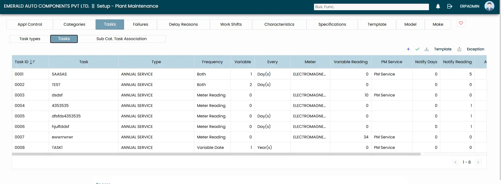

<div data-category="Plant Maintenance" data-title="Tasks" data-updated="January 27, 2026" data-contributors="RoadmapIT" data-breadcrumb="Home,Plant Maintenance,Tasks">
  <div class="page-content">
    <p>Task is a term that describes the classification of maintenance tasks based on their purpose, scope, or frequency. Task type in plant maintenance helps to plan, organize, and execute maintenance tasks more effectively and efficiently.</p>
    <p>Task and it's type are mapped. Frequency for the task is given here.</p>
    <h5>Navigation path:</h5>
    <p class="fs-6">Plant Maintenance \ Setup \ Setup-Plant Maintenance \ Tasks \ Tasks</p>
    
    <ul style="list-style-type: none; align-content: center">
      <li class="mouse-icon">Click to <i class="bi bi-plus fs-4 mx-2 text-primary"></i> Add.</li>
      <li class="mouse-icon">Enter the Task</li>
      <li class="mouse-icon">Select the Task Type and Frequency</li>
      <li class="mouse-icon">Based on Frequency give variable date meter reading</li>
      <li class="mouse-icon">Spare can be given for the task</li>
      <li class="mouse-icon">Function of the Template button is to enter the details of Resource in Excel Format</li>
      <li class="mouse-icon">Upload button helps to upload the files</li>
      <li class="mouse-icon">Export to Excel button shows the details in Excel format</li>
      <li class="mouse-icon">View Exception shows the Exception details</li>
      <li class="mouse-icon">Click on <i class="bi bi-check-lg fs-4 mx-1 text-success"></i> button to save</li>
    </ul>
  </div>
</div>
